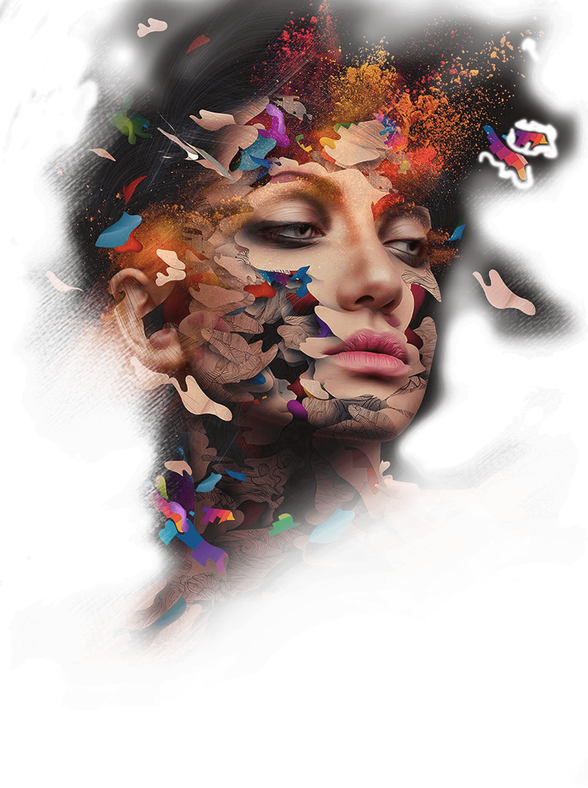
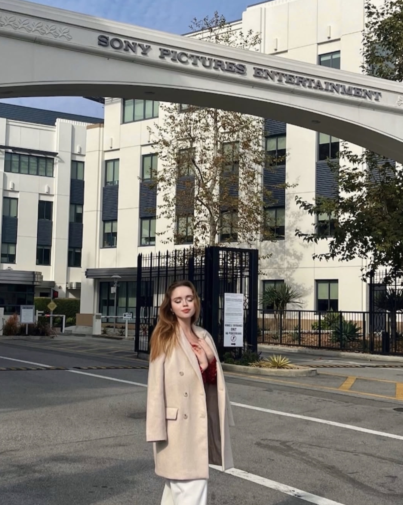
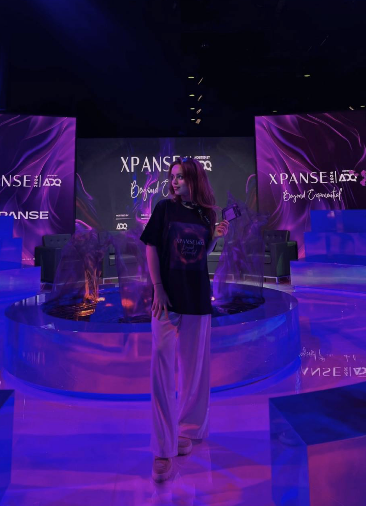
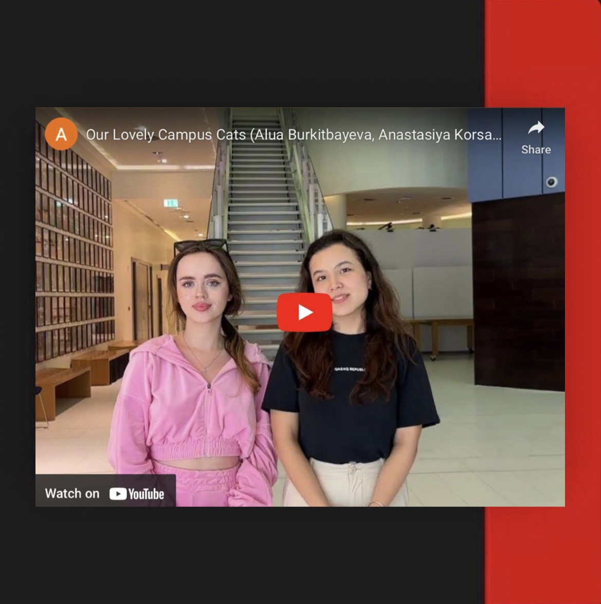
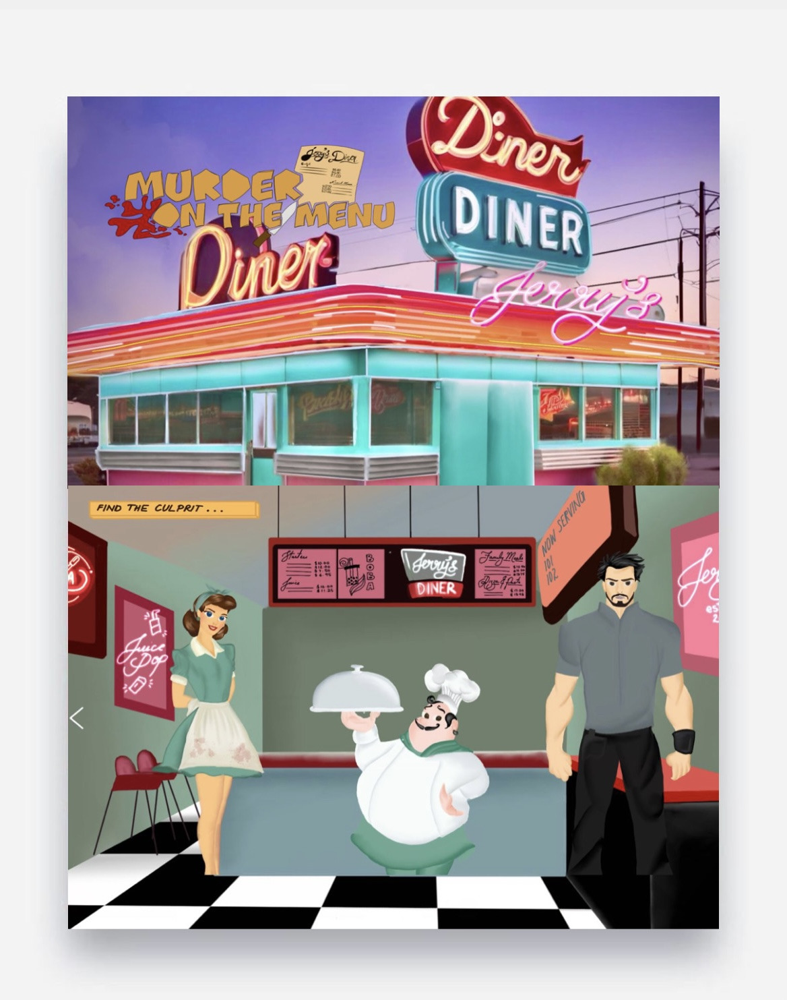
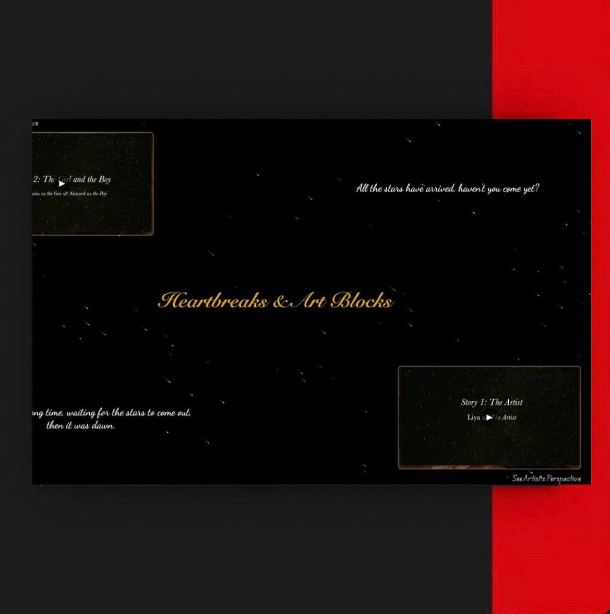

InteractiveMedia Portfolio
Where creativity meets strategy and ideas transform into impact



Anastasiya Korsak
A creative professional specializing in interactive media, I focus on developing cutting-edge digital experiences that blend storytelling and technology. My work explores the intersection of innovation and design, turning concepts into captivating and immersive platforms. Always striving to push creative and technological boundaries, I'm passionate about crafting experiences that leave a lasting impact.
Work That Speaks for Itself: Exploring My Latest Projects

Comics "Murder on the Menu"
An interactive comic set in a 1950s-style American diner, where players become detectives solving a chilling murder. The retro, nostalgic setting contrasts sharply with the crime, creating a tense, immersive experience. Players actively investigate the scene, uncover clues, and interact with characters, piecing together the mystery themselves.
Learn more
Heartbreak and Arts Blocks
The primary aim of the project is to create a dramatic, yet subtle, narrative that invites the audience to engage with the unfolding events from multiple viewpoints. By offering these two perspectives, the film encourages viewers to empathize with both characters, challenging their assumptions and deepening their emotional connection to the story.
Learn moreWebsite "Cats of New York University Abu Dhabi"
NYUAD Cats celebrates the beloved feline residents of New York University Abu Dhabi, highlighting their unique quirks and fostering community support for their well-being.
Learn more
Sound Project "The Final Print"
The Final Print is an immersive audio experience blending sci-fi horror and environmental themes. The story follows two college students whose attempt to print papers takes a dark turn when the printer comes to life. This narrative highlights humanity's negligence toward the environment, emphasizing the destructive cycle of resource consumption.
Learn more